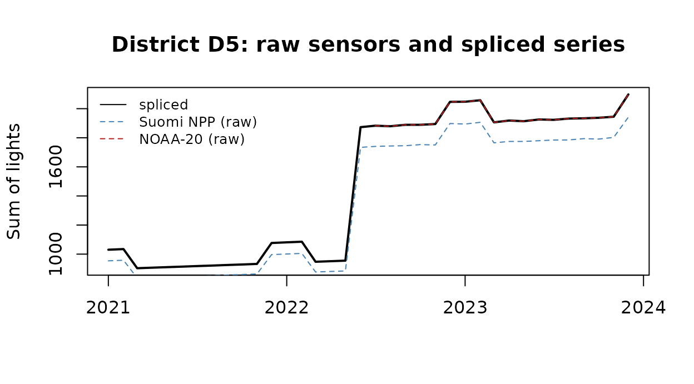

From nighttime lights rasters to an econometrics-ready panel
Source:vignettes/ntlpanel.Rmd
ntlpanel.RmdDownloading nighttime lights is a solved problem. Turning them into a panel you can defend in a referee report is not. Three problems come up in almost every applied project, and they matter most at high latitude:
-
Sensor continuity. NOAA ended Suomi NPP data
delivery on 2 November
- Any VIIRS series that runs past October 2026 has to switch to NOAA-20, and the switch must not show up as a fake shock.
- Coverage. Around the June solstice VIIRS cannot observe northern Kazakhstan at night. A monthly sum over the pixels that remain mixes “dark” with “unobserved”.
- Units. Boundaries change (Kazakhstan created Abai, Zhetysu and Ulytau in 2022), and treatment is often defined by distance to a site.
ntlpanel makes each of these an explicit, recorded step.
This vignette runs the whole workflow on the synthetic
data shipped with the package, which mimics these problems, and ends
with the code for a real Kazakhstan panel.
library(ntlpanel)
ex <- ntl_example()1. Index the files
ntl_sources() lists the supported products. Black Marble
products can be downloaded with ntl_fetch(). Other
products, such as these EOG-format monthly composites, are indexed with
ntl_files().
ntl_sources()[, c("id", "frequency", "backend")]
#> id frequency backend
#> 1 VNP46A3 month laads
#> 2 VNP46A4 year laads
#> 3 VJ146A3 month laads
#> 4 VJ146A4 year laads
#> 5 eog_vnl_monthly month local
#> 6 eog_vnl_annual year local
#> 7 dmsp_viirs_li year local
#> 8 viirs_like_chen year local
#> 9 world_nightlights_regan year local
m <- ntl_files(ex$dir, "eog_vnl_monthly")
m
#> <ntl_manifest> 54 file(s), 2 series, periods 2021-01-01 to 2023-12-01
#> series period_label tile status
#> eog_vnl_monthly_j01 2022-07 75N060E local
#> eog_vnl_monthly_j01 2022-08 75N060E local
#> eog_vnl_monthly_j01 2022-09 75N060E local
#> eog_vnl_monthly_j01 2022-10 75N060E local
#> eog_vnl_monthly_j01 2022-11 75N060E local
#> eog_vnl_monthly_j01 2022-12 75N060E local
#> eog_vnl_monthly_j01 2023-01 75N060E local
#> eog_vnl_monthly_j01 2023-02 75N060E local
#> eog_vnl_monthly_j01 2023-03 75N060E local
#> eog_vnl_monthly_j01 2023-04 75N060E local
#> file
#> SVDNB_j01_20220701-20220731_75N060E_vcmslcfg_v10_c000000000000.avg_rade9h.tif
#> SVDNB_j01_20220801-20220831_75N060E_vcmslcfg_v10_c000000000000.avg_rade9h.tif
#> SVDNB_j01_20220901-20220930_75N060E_vcmslcfg_v10_c000000000000.avg_rade9h.tif
#> SVDNB_j01_20221001-20221031_75N060E_vcmslcfg_v10_c000000000000.avg_rade9h.tif
#> SVDNB_j01_20221101-20221130_75N060E_vcmslcfg_v10_c000000000000.avg_rade9h.tif
#> SVDNB_j01_20221201-20221231_75N060E_vcmslcfg_v10_c000000000000.avg_rade9h.tif
#> SVDNB_j01_20230101-20230131_75N060E_vcmslcfg_v10_c000000000000.avg_rade9h.tif
#> SVDNB_j01_20230201-20230228_75N060E_vcmslcfg_v10_c000000000000.avg_rade9h.tif
#> SVDNB_j01_20230301-20230331_75N060E_vcmslcfg_v10_c000000000000.avg_rade9h.tif
#> SVDNB_j01_20230401-20230430_75N060E_vcmslcfg_v10_c000000000000.avg_rade9h.tif
#> ... 44 more row(s)
table(m$series)
#>
#> eog_vnl_monthly_j01 eog_vnl_monthly_npp
#> 18 36Each EOG file is paired with its cloud-free coverage
(cf_cvg) file. The two platforms, Suomi NPP
(npp) and NOAA-20 (j01), become separate
series.
2. Extract with coverage diagnostics
ntl_extract() reads one period at a time, masks pixels
and computes exact zonal statistics. min_obs = 2 drops
pixels with fewer than two cloud-free observations. Pixels with zero
observations are always treated as unobserved, even though EOG files
store 0 radiance there.
long <- ntl_extract(m, ex$units_old,
id_col = "district", min_obs = 2, quiet = TRUE
)
cols <- c("district", "series", "ntl_sum", "share_valid", "share_masked",
"mean_obs")
long[long$period == as.Date("2022-06-01"), cols]
#> district series ntl_sum share_valid share_masked mean_obs
#> 126 D1 eog_vnl_monthly_npp NA 0 0 0
#> 162 D2 eog_vnl_monthly_npp NA 0 0 0
#> 198 D3 eog_vnl_monthly_npp NA 0 0 0
#> 234 D4 eog_vnl_monthly_npp 773.5295 1 0 8
#> 270 D5 eog_vnl_monthly_npp 1734.0659 1 0 8
#> 306 D6 eog_vnl_monthly_npp 5722.8332 1 0 8In June the three northern districts have
share_valid = 0 and ntl_sum = NA, not 0. The
southern districts are fully observed.
3. Splice the two satellites
The NOAA-20 series reads about 8% brighter. ntl_splice()
estimates the relationship on overlap months, rescales Suomi NPP to the
NOAA-20 level and switches to NOAA-20 from its first month.
sp <- ntl_splice(long, from = "eog_vnl_monthly_npp", to = "eog_vnl_monthly_j01")
cols <- c("district", "n_overlap", "level_shift_pct", "cor", "ratio_cv", "b")
ntl_splice_report(sp)[, cols]
#> district n_overlap level_shift_pct cor ratio_cv b
#> 1 D1 15 8.000023 1.0000000 8.599427e-06 1.080000
#> 2 D2 15 7.999303 0.9999996 6.335315e-05 1.079993
#> 3 D3 15 7.980030 0.9999893 9.900128e-04 1.079800
#> 4 D4 18 8.000229 0.9999987 1.027723e-04 1.080002
#> 5 D5 18 8.004541 0.9989300 1.640988e-03 1.080045
#> 6 D6 18 7.999896 0.9999995 6.677057e-05 1.079999level_shift_pct is the gap between sensors. A large or
unit-specific shift, or a high ratio_cv (an unstable
month-to-month ratio), means the splice needs care. With
by_month = TRUE the calibration is estimated separately for
each calendar month.
d5 <- long[long$district == "D5", ]
s5 <- sp[sp$district == "D5", ]
plot(s5$period, s5$ntl_sum,
type = "l", lwd = 2, xlab = "", ylab = "Sum of lights",
main = "District D5: raw sensors and spliced series"
)
for (s in unique(d5$series)) {
z <- d5[d5$series == s, ]
col <- if (grepl("j01", s)) "firebrick" else "steelblue"
lines(z$period, z$ntl_sum, lty = 2, col = col)
}
legend("topleft", c("spliced", "Suomi NPP (raw)", "NOAA-20 (raw)"),
lty = c(1, 2, 2), col = c("black", "steelblue", "firebrick"),
bty = "n", cex = 0.8
)
4. Build the panel and decide what to do with gaps
ntl_panel() balances the panel and adds time indices and
a transformed outcome. min_share_valid turns poorly
observed cells into explicit missing values.
p <- ntl_panel(sp, min_share_valid = 0.5, transform = "log1p")
p
#> <ntl_panel> 6 unit(s) x 36 month period(s); outcome 'ntl_sum', transform 'log1p'; 8.3% missing
#> district period period_label year month t ntl_sum ntl ntl_missing
#> D1 2021-01-01 2021-01 2021 1 1 11643.09 9.362554 FALSE
#> D1 2021-02-01 2021-02 2021 2 2 11689.70 9.366549 FALSE
#> D1 2021-03-01 2021-03 2021 3 3 10205.52 9.230782 FALSE
#> D1 2021-04-01 2021-04 2021 4 4 10246.50 9.234789 FALSE
#> D1 2021-05-01 2021-05 2021 5 5 10287.28 9.238761 FALSE
#> D1 2021-06-01 2021-06 2021 6 6 NA NA TRUE
#> D1 2021-07-01 2021-07 2021 7 7 NA NA TRUE
#> D1 2021-08-01 2021-08 2021 8 8 10411.43 9.250756 FALSE
#> D1 2021-09-01 2021-09 2021 9 9 10452.91 9.254731 FALSE
#> D1 2021-10-01 2021-10 2021 10 10 10494.84 9.258734 FALSE
#> low_coverage series product platform
#> FALSE eog_vnl_monthly_npp+eog_vnl_monthly_j01 spliced SNPP + NOAA-20
#> FALSE eog_vnl_monthly_npp+eog_vnl_monthly_j01 spliced SNPP + NOAA-20
#> FALSE eog_vnl_monthly_npp+eog_vnl_monthly_j01 spliced SNPP + NOAA-20
#> FALSE eog_vnl_monthly_npp+eog_vnl_monthly_j01 spliced SNPP + NOAA-20
#> FALSE eog_vnl_monthly_npp+eog_vnl_monthly_j01 spliced SNPP + NOAA-20
#> TRUE eog_vnl_monthly_npp+eog_vnl_monthly_j01 spliced SNPP + NOAA-20
#> TRUE eog_vnl_monthly_npp+eog_vnl_monthly_j01 spliced SNPP + NOAA-20
#> FALSE eog_vnl_monthly_npp+eog_vnl_monthly_j01 spliced SNPP + NOAA-20
#> FALSE eog_vnl_monthly_npp+eog_vnl_monthly_j01 spliced SNPP + NOAA-20
#> FALSE eog_vnl_monthly_npp+eog_vnl_monthly_j01 spliced SNPP + NOAA-20
#> ntl_sum_adj ntl_mean share_valid share_masked mean_obs n_pixels
#> 11643.09 4.851288 1 0 8 2400
#> 11689.70 4.870709 1 0 8 2400
#> 10205.52 4.252300 1 0 8 2400
#> 10246.50 4.269374 1 0 8 2400
#> 10287.28 4.286369 1 0 2 2400
#> NA NA 0 0 0 2400
#> NA NA 0 0 0 2400
#> 10411.43 4.338097 1 0 2 2400
#> 10452.91 4.355378 1 0 8 2400
#> 10494.84 4.372849 1 0 8 2400
#> origin
#> eog_vnl_monthly_npp (adjusted)
#> eog_vnl_monthly_npp (adjusted)
#> eog_vnl_monthly_npp (adjusted)
#> eog_vnl_monthly_npp (adjusted)
#> eog_vnl_monthly_npp (adjusted)
#> eog_vnl_monthly_npp (adjusted)
#> eog_vnl_monthly_npp (adjusted)
#> eog_vnl_monthly_npp (adjusted)
#> eog_vnl_monthly_npp (adjusted)
#> eog_vnl_monthly_npp (adjusted)
#> ... 206 more row(s)ntl_gapfill() applies one rule and records it. It also
flags the unit-months at risk of stray-light gaps.
p_int <- ntl_gapfill(p, rule = "interp", max_gap = 2,
units = ex$units_old, lat_threshold = 49)
attr(p_int, "gap_report")
#> month missing_before missing_after
#> 1 1 0 0
#> 2 2 0 0
#> 3 3 0 0
#> 4 4 0 0
#> 5 5 0 0
#> 6 6 9 0
#> 7 7 9 0
#> 8 8 0 0
#> 9 9 0 0
#> 10 10 0 0
#> 11 11 0 0
#> 12 12 0 0
table(imputed = p_int$imputed, risk = p_int$stray_light_risk)
#> risk
#> imputed FALSE TRUE
#> FALSE 180 18
#> TRUE 0 18All 18 missing northern summer cells are bridged by interpolation and flagged as imputed, so results can be checked with and without them. The seasonal rule cannot fill them, because June and July are never observed in the north. That is the honest answer. The alternatives are to interpolate (as above), to drop those months, or to work with annual data.
5. Add treatment exposure
Two synthetic sites switch on in June 2022 and March 2023.
ntl_exposure() gives each district its distance ring and
the first treatment date within the largest ring. That date is the
cohort variable for staggered difference-in-differences estimators.
e <- ntl_exposure(ex$units_old, ex$sites,
rings = c(50, 100, 200), id_col = "district", site_id_col = "site",
site_time_col = "start"
)
e
#> district nearest_site dist_km ring within_50km within_100km within_200km
#> 1 D1 S2 304.95241 >200 FALSE FALSE FALSE
#> 2 D2 S2 165.54726 100-200 FALSE FALSE TRUE
#> 3 D3 S2 39.49883 0-50 TRUE TRUE TRUE
#> 4 D4 S1 167.06455 100-200 FALSE FALSE TRUE
#> 5 D5 S1 26.85456 0-50 TRUE TRUE TRUE
#> 6 D6 S1 137.28740 100-200 FALSE FALSE TRUE
#> n_sites_within first_treat
#> 1 0 <NA>
#> 2 1 2023-03-01
#> 3 1 2023-03-01
#> 4 1 2022-06-01
#> 5 1 2022-06-01
#> 6 1 2022-06-01
panel <- merge(as.data.frame(p_int),
e[, c("district", "within_50km", "first_treat")],
by = "district"
)
panel$post <- !is.na(panel$first_treat) & panel$period >= panel$first_treat
panel$treated <- panel$post & panel$within_50km
fit <- lm(ntl ~ treated + factor(district) + factor(period), data = panel,
subset = !imputed)
coef(summary(fit))["treatedTRUE", ]
#> Estimate Std. Error t value Pr(>|t|)
#> 5.914533e-01 6.008699e-03 9.843284e+01 2.517207e-142With fixest you would write
feols(ntl ~ treated | district + t, data = panel[!panel$imputed, ], cluster = ~district).
For staggered adoption, pass first_treat to
did::att_gt().
6. Move official statistics across boundary vintages
Nighttime lights never need a crosswalk: you re-extract them with the
new boundaries. Official statistics often exist in only one vintage,
though. ntl_crosswalk() builds weights (area, or lights as
below) and ntl_apply_crosswalk() applies them.
lights <- ntl_read(m, period = "2022-01", series = "eog_vnl_monthly_npp")$value
xw <- ntl_crosswalk(ex$units_old, ex$units_new, "district", "district_new",
weight_raster = lights)
xw
#> from_id to_id area_km2 weight weight_source w_from w_to
#> 1 D1 D1a 23674.16 957.7371 raster 0.08468272 1.0000000
#> 2 D1 D1b 23674.16 10351.9736 raster 0.91531728 1.0000000
#> 3 D2 D2 47348.33 1393.8145 raster 1.00000000 1.0000000
#> 4 D3 D3 47348.33 871.9799 raster 1.00000000 1.0000000
#> 5 D4 D4 50254.53 872.0873 raster 1.00000000 1.0000000
#> 6 D5 D56 50254.53 1001.0342 raster 1.00000000 0.1343382
#> 7 D6 D56 50254.53 6450.5659 raster 1.00000000 0.8656618
#> relation
#> 1 split
#> 2 split
#> 3 unchanged
#> 4 unchanged
#> 5 unchanged
#> 6 merge
#> 7 merge
stats <- data.frame(district = ex$units_old$district, year = 2022,
employment = c(120, 80, 60, 150, 90, 40),
unemployment_rate = c(5, 7, 6, 4, 8, 9))
ntl_apply_crosswalk(stats, xw, "district",
vars = c("employment", "unemployment_rate"),
type = c("extensive", "intensive"), by = "year"
)
#> district_new year employment unemployment_rate
#> 1 D1a 2022 10.16193 5.000000
#> 2 D1b 2022 109.83807 5.000000
#> 3 D2 2022 80.00000 7.000000
#> 4 D3 2022 60.00000 6.000000
#> 5 D4 2022 150.00000 4.000000
#> 6 D56 2022 130.00000 8.8656627. The real thing: Kazakhstan with Black Marble
The code below is not run when the vignette is built. It needs a NASA
Earthdata token in EARTHDATA_TOKEN and region boundaries in
the 2022 vintage (17 regions plus the cities of national significance).
A monthly Black Marble tile is roughly 50-130 MB and Kazakhstan needs 10
of them, so the loop downloads one year at a time and clears the cache
after each year.
library(sf)
# your boundaries, with an identifier column "region"
regions <- st_read("kz_adm1_2022.gpkg")
ntl_tiles(regions) # 10 tiles: h22-h26, v03-v04
extract_year <- function(product, year) {
m <- ntl_fetch(product, aoi = regions, start = paste0(year, "-01"),
end = paste0(year, "-12"))
out <- ntl_extract(m, regions, id_col = "region", quality_max = 1)
ntl_cache_clear(m)
out
}
snpp <- lapply(2014:2026, function(y) extract_year("VNP46A3", y))
j01 <- lapply(2018:2026, function(y) extract_year("VJ146A3", y))
long <- do.call(rbind, c(snpp, j01))
sp <- ntl_splice(long, from = "VNP46A3", to = "VJ146A3",
by_month = TRUE, min_share_valid = 0.8)
ntl_splice_report(sp)
p <- ntl_panel(sp, min_share_valid = 0.6)
p <- ntl_gapfill(p,
rule = "interp", max_gap = 2, units = regions, lat_threshold = 45
)Before you commit to a long monthly series, run
system.file("scripts", "validate_splice_kz.R", package = "ntlpanel").
It checks tile orientation and whether the Suomi NPP to NOAA-20 shift is
stable across Kazakhstan’s regions and seasons.